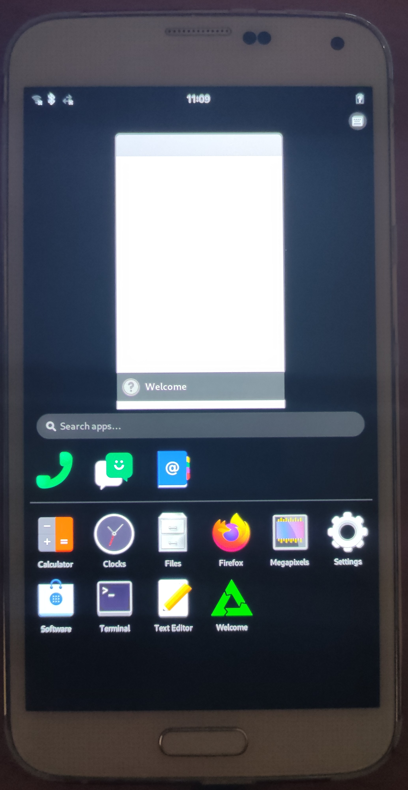

Samsung Galaxy S5 (samsung-klte)
|
 Samsung Galaxy S5 | |
| Manufacturer | Samsung |
|---|---|
| Name | Galaxy S5 |
| Codename | samsung-klte |
| Released | 2014 |
| Category | testing |
| Original software | Android |
| Original version | 4.4.2 |
| Extended version | 6.0.1 |
| postmarketOS kernel | 5.14 |
| Hardware | |
| Chipset | Qualcomm Snapdragon 801 (MSM8974PRO-AC) |
| CPU | Quad-core 2.5 GHz Krait 400 |
| GPU | Adreno 330 |
| Display | 1080 x 1920 AMOLED |
| Storage | 16/32 GB |
| Memory | 2 GB |
| Architecture | armv7 |
| Type | handset |
| Unixbench Whet/Dhry score | 884.3 |
{kind=link}
| USB Networking |
Partial
|
|---|---|
| Flashing |
Works
|
| Touchscreen |
Works
|
| Display |
Works
|
| WiFi |
Works
|
| FDE | |
| Mainline |
Works
|
| Battery |
Partial
|
| 3D Acceleration |
Partial
|
| Audio |
Broken
|
| Bluetooth |
Works
|
| Camera |
Broken
|
| GPS |
Broken
|
| Mobile data |
Works
|
| SMS |
Works
|
| Calls |
Broken
|
| USB OTG / USB-C Role switching |
Broken
|
| NFC |
Broken
|
| Accelerometer |
Broken
|
|---|---|
| Magnetometer | |
| Ambient Light | |
| Proximity | |
| Hall Effect | |
| Barometer | |
| Power Sensor | |
| Camera Flash | |
|---|---|
| Keyboard | |
| Touchpad | |
| USB-A | |
| HDMI/DP | |
| Ir TX |
Broken
|
| Ir RX | |
| Stylus | |
| Haptics | |
| Ethernet | |
| FOSS bootloader | |
|
This device is based on the Snapdragon 801. See the SoC page for common tips, guides and troubleshooting steps |
Contents
Contributors
Maintainer(s)
Users owning this device
- Alexeymin (Notes: Test subject #1.1. Old phone in good shape with new battery)
- Bastindo (Notes: 1x white, 1x black)
- BenWolsieffer
- CalcProgrammer1
- Drebrez (Notes: Power IC dead)
- EnderNightLord (Notes: great condition)
- Hisssy (Notes: kltechn (China))
- Ichernev (Notes: Working on mainline kernel support)
- Maccraft123 (Notes: i also got a bunch of random parts)
- Magic RB
- Manty (Notes: Android development)
- Minecrell (Notes: SM-G900F with fa2 panel)
- Mossroy (Notes: unused, with a screen that has brightness issues)
- Nobodywasishere
- Nspire
-
Rongrong (Notes:
kltechnduo(G9006W). WLAN vanished (nothing relevant indmesg), SMS (w/ofono.modemmanageris broken) works; SIM1 works, SIM2 was not tested. WARNING: DO NOT TRY TO FLASHlk2ndTOkltechnduo. IT CANNOT BOOT AT ALL!) - Segfault
- Selfisekai
- Sliwkr
- SnappedAll (Notes: lineageos 18.1, daily driver)
- TPJS (Notes: 6x (all have no screen; two are running PMOS and one is probably dead))
- Unrznbl (Notes: 2022-09-21 heimdall fails to flash)
- Vaulster
- WolfLink115
- Wurzel3
Status table explanation
This table explains more in detail why some features are marked as partial (P). Generally it's because feature works with some limitations, or is a "work-in-progress":
| Component | Status | notes |
|---|---|---|
| USB Networking | P | Only first cable attach works, doesn't work after detaching (missing cable detection support) |
| 3D Accel (GPU) | P | GPU works for simple use cases, but can't render complex GUIs/shaders. If you run Phosh or Plasma Mobile, you'll "crash" the display. Phosh works more steadily though. The phone continues to work, so this shouldn't be too hard to figure out. This is most likely due to lack of GPU IOMMU support or bugs in mesa/freedreno.
SXMO may be more wise UI choice for now. |
| Battery | P | Percentage reporting works; no charging status reported, but it is charging fine |
How to enter flash mode
Press and hold Volume Down + Home + Power simultaneously. Then click Volume Up to confirm.
How to enter recovery mode
Press and hold Volume Up + Home + Power simultaneously.
Installation
First, install pmbootstrap.
Setup device to be used:
$ pmbootstrap init
Channel [edge]:
Vendor [samsung]: samsung <- enter this
Device codename [i9100]: klte <- enter this
Enable this package? (y/n) [y] <- you probably want non-free firmware
User interface [sxmo]: <- choose any UI by your preference. fbkeyboard and sxmo work well :)
...
Build the rootfs image:
$ pmbootstrap install
Then in order to flash it put your device in download mode, and plug it in USB. Then do:
$ pmbootstrap flasher --method=heimdall-bootimg flash_rootfs
Hold "Volume down" + "Home" buttons at the end of the process,
so that when phone reboots put it in flashing mode again
$ pmbootstrap flasher --method=heimdall-bootimg flash_kernel --no-install
This time, don't hold any button, let it reboot to Linux!
Installation with lk2nd
Currently, lk2nd only officially supports the international variant (klte), unofficially, any other variants with a revision id of 14 should work partially. Otherwise, lk2nd would probably fail to boot. Refer to the Links section to learn more information on porting lk2nd to your variant. |
You can use custom 2nd stage bootloader to install postmarketOS on Samsung Galaxy S5. Soon this will be the required way to perform the installation, and booting postmarketOS on samsung-klte without lk2nd will not be supported. It requires that you have pmbootstrap >= 1.42.3.
1. Generate all images locally
$ pmbootstrap init
select samsung-klte, your favorite UI (but only fbkeyboard is really stable now. If you want to select UI that is not shown because of GPU support limitation, do one of the below:
$ pmbootstrap config ui phosh
or, alternatively
$ pmbootstrap config ui plasma-mobile
$ pmbootstrap install [--no-firewall] [--password=123456]
2. Boot your phone to download mode (hold Volume Down + Home while booting).
3. Flash lk2nd
$ pmbootstrap flasher --method=heimdall-bootimg flash_lk2nd
Do this step only once. If you want to reinstall postmarketOS and already have lk2nd installed, no need to repeat this.
After executing that command phone will automatically reboot. Hold Volume Down (whithout Home) while booting to get into lk2nd/fastboot mode.
4. Now in lk2nd/fastboot mode, do as usual
$ pmbootstrap flasher flash_kernel --no-install
$ pmbootstrap flasher flash_rootfs [--partition userdata] # install to userdata if you want more space in /, when using full UIs like phosh or plasma
$ fastboot erase system # only if you have flashed rootfs to userdata partition in the previous command
$ fastboot reboot
7. You are done! With this method you don't have to reflash phone to get kernel updates anymore. lk2nd is capable of booting from ext2 filesystem directly.
Troubleshooting
Bluetooth
If you see errorrs about "Reading local version info failed (-110)" in dmesg, like this:
$ dmesg | grep Bluetooth [ 20.451424] Bluetooth: Core ver 2.22 ... [ 23.035059] Bluetooth: hci0: command 0x1001 tx timeout ... [ 31.195124] Bluetooth: hci0: BCM: Reading local version info failed (-110)
the try to reload bluetooth-uart driver module
$ sudo modprobe -r hci_uart $ sudo modprobe hci_uart
The you should see in dmesg that bluletooth is recognized (example):
[ 1945.562907] Bluetooth: hci0: BCM: chip id 92 [ 1945.566860] Bluetooth: hci0: BCM: features 0x2f [ 1945.591717] Bluetooth: hci0: BCM4350C0 [ 1945.591731] Bluetooth: hci0: BCM4354 (003.001.012) build 0000 [ 1945.593732] Bluetooth: hci0: BCM4354 'brcm/BCM4354.hcd' Patch [ 1954.428045] Bluetooth: hci0: BCM4354 37.4MHz SEMCO-B80 K-LTE-0395 [ 1954.428065] Bluetooth: hci0: BCM4354 (003.001.012) build 0797
Mainlining Notes
Power IC
The phone uses max77804k MFD (Multi Function Device), which is also a Micro-USB_Interface_Controller to handle charging, extcon (cable detect), vibrator, flash led. This device is not in mainline, but it is very similar (i.e the same) to max77693 in register layout. In the next paragraph I'll refer to max77804k code as downstream and max77693 code as upstream.
- Charging : downstream charging code is scary. Mainline code only reads info, and doesn't charge, so a brave soul might be able to figure out a minimal setup that does charge the phone.
- Extcon : downstream extcon is not too bad, and it is trivial to follow the basic use cases and ensure they are ported correctly. Mainline code is different and writes different values for diffrent use cases, but following a similar structure it can be made to behave.
- Flash Leds : these are pretty straight forward, the existing mainline code is a bit weird, but I wrote a port of downstream and it does work for the most part.
- Vibrator : the mainline code is for a different kind of vibrator. It shouldn't be too hard to port the downstream code.
USB
At the moment usb-networking works only the first time it is plugged, and only if the (experimental) max77804k is not enabled.
There are 2 different blocks for USB on the klte. One has a good driver, and manages the somewhat working usb networking -- let's call it simple. But if the max77804k driver is enabled, it switches to the other IP block which does not have mainline drivers -- let's call it complex. Downstream only has code for the complex block.
Drivers for the complex block are present on newer SoCs from qualcomm, but at least to me, they look different than the downstream code (downstream doesn't have the notion of phy's, and this is a pretty big deal). So this could be a simple fix, but likely isn't.
Another possible approach will be to somehow let the simple block handle all the USB, but without documentation on max77804k/usb blocks this is pretty hard.
Graphics/Display
There is mainline support for the GPU with 3D Acceleration. kmscube works.
If you run Phosh or Plasma Mobile, you'll "crash" the display. Phosh works more steadily though. The phone continues to work, so this shouldn't be too hard to figure out. This is most likely due to lack of GPU IOMMU support or bugs in mesa/freedreno.
SXMO may be more wise UI choice for now.
Parts Bin code
max77693 to max77804k port (incl some usb work): https://gitlab.com/ichernev/linux-postmarketos/-/tree/max77693-update
max77804k with leds only: https://gitlab.com/ichernev/linux-postmarketos/-/tree/max77804k
Running on pure mainline
At the moment (5.6) (this is still needed in 5.13-rc), if you want to use real mainline (from torvalds tree), you'd need this patch:
Patch:
commit 765f55b248cd3b231af8431fe2f2aeca263b4e4b
Author: Jonathan Marek <jonathan@marek.ca>
Date: Sat Oct 5 21:15:07 2019 -0400
HACK: delay rpmcc init
Delay RPMCC init. This is a hack that somehow fixes some problems.
Hopefully the need for this patches goes away once the IOMMU is
working.
Signed-off-by: Jonathan Marek <jonathan@marek.ca>
Signed-off-by: Brian Masney <masneyb@onstation.org>
diff --git a/drivers/clk/qcom/clk-smd-rpm.c b/drivers/clk/qcom/clk-smd-rpm.c
index 0bbfef9fa6dec..447ca887deb11 100644
--- a/drivers/clk/qcom/clk-smd-rpm.c
+++ b/drivers/clk/qcom/clk-smd-rpm.c
@@ -15,6 +15,7 @@
#include <linux/of_device.h>
#include <linux/platform_device.h>
#include <linux/soc/qcom/smd-rpm.h>
+#include <linux/delay.h>
#include <dt-bindings/clock/qcom,rpmcc.h>
#include <dt-bindings/mfd/qcom-rpm.h>
@@ -770,6 +771,9 @@ static int rpm_smd_clk_probe(struct platform_device *pdev)
rcc->clks = rpm_smd_clks;
rcc->num_clks = num_clks;
+ /* delay rpm init, somehow this fixes some problems */
+ usleep_range(100000, 110000);
+
for (i = 0; i < num_clks; i++) {
if (!rpm_smd_clks[i])
continue;
I won't be surprised if more issues pop up in the future, as nobody is really testing for regressions on phones.
Getting early kernel logs using UART
Craft a cable using Serial_debugging:Cable_schematics#microUSB.2FCarkit_debug_cable with 619kΩ resistor (see also MUIC)
Read help for CONFIG_DEBUG_QCOM_UARTDM kernel konfig. Enable CONFIG_DEBUG_LL + CONFIG_DEBUG_QCOM_UARTDM + correct addresses for CONFIG_DEBUG_UART_PHYS and CONFIG_DEBUG_UART_VIRT. The ones listed in a help for CONFIG_DEBUG_QCOM_UARTDM option for MSM8974 work fine:
CONFIG_DEBUG_LL=y CONFIG_DEBUG_QCOM_UARTDM=y CONFIG_DEBUG_UART_PHYS=0xf991e000 CONFIG_DEBUG_UART_VIRT=0xfa71e000 CONFIG_EARLY_PRINTK=y
And add earlyprintk to kernel command line. This allows to receive debug messages from such early stages so you can even debug kernel self-decompressor.
CPU tuning
At present the WIP kernel (linux-postmarketos-qcom-msm8974) does not configure frequency scaling (CONFIG_PM_DEVFREQ), so no choice in governors is available (try cpufreq-info). The configured default is conservative (CONFIG_CPU_FREQ_DEFAULT_GOV_CONSERVATIVE), which may be less thermally demanding (see next item) than others.
If the phone becomes too hot
Use this to check temperatures:
$ for i in $(ls --color=never /sys/devices/virtual/thermal/); do cat /sys/devices/virtual/thermal/$i/type /sys/devices/virtual/thermal/$i/temp; done
Example output:
cpu-thermal0 45000 cpu-thermal1 44000 cpu-thermal2 44000 cpu-thermal3 43000 q6-dsp-thermal 44000 modemtx-thermal 43000 video-thermal 44000 wlan-thermal 44000 gpu-thermal-top 44000 gpu-thermal-bottom 43000
Alternatively, for an exhaustive or annotated output, try systool (lm-sensors package), e.g.,
$ systool -v -c thermal
$ systool -c thermal -A temp
For a dynamic graphical (ncurses) display of temperatures, try tmon (linux-tools-tmon package).
Using modem
First, install SIM card into device (obviously).
When using device without mobile UI, you will need to install modemmanager manually (sudo apk add modemmanager), start the service (sudo rc-service modemmanager start) (optionally add it to defult runlevel: sudo rc-update add modemmanager default). Check out if SIM card is detected and is registered: mmcli -m any.
Add network connection using cell network:
$ sudo nmcli c add con-name "modem" type "gsm" ifname "wwan0qmi0"
Check connection status using nmcli d and if rmnet0 got the IP address using ip a.
More info here, including oFono instructions: https://gist.github.com/Minecrell/4cc2bfb9fcae18e294386b0a213907d1
Partition layout
Partition layout:
~ # fdisk -l /dev/block/mmcblk0 Found valid GPT with protective MBR; using GPT Disk /dev/block/mmcblk0: 30777344 sectors, 2740M Logical sector size: 512 Disk identifier (GUID): 98101b32-bbe2-4bf2-a06e-2bb33d000c20 Partition table holds up to 128 entries First usable sector is 34, last usable sector is 30777310 Number Start (sector) End (sector) Size Code Name 1 8192 38911 15.0M 0700 apnhlos 2 38912 156543 57.4M 0700 modem 3 156544 157567 512K 0700 sbl1 4 157568 157695 65536 0700 dbi 5 157696 157759 32768 0700 ddr 6 157760 161855 2048K 0700 aboot 7 161856 162879 512K 0700 rpm 8 162880 163903 512K 0700 tz 9 163904 170047 3072K 0700 fsg 10 170048 184319 7136K 0700 pad 11 184320 204799 10.0M 0700 param 12 204800 233471 14.0M 0700 efs 13 233472 239615 3072K 0700 modemst1 14 239616 245759 3072K 0700 modemst2 15 245760 272383 13.0M 0700 boot 16 272384 303103 15.0M 0700 recovery 17 303104 329727 13.0M 0700 fota 18 329728 344045 7159K 0700 backup 19 344046 344047 1024 0700 fsc 20 344048 344063 8192 0700 ssd 21 344064 360447 8192K 0700 persist 22 360448 378879 9216K 0700 persdata 23 378880 5498879 2500M 0700 system 24 5498880 5908479 200M 0700 cache 25 5908480 6010879 50.0M 0700 hidden 26 6010880 30777310 11.8G 0700 userdata
Component support table
| Component | Codename | Mainline kernel | Since when |
|---|---|---|---|
| Debug serial | msm_serial /dev/ttyMSM0 | Working | v4.17-rc1 |
| Volume & home buttons | gpio-keys | Working | 5.8 |
| Regulator nodes | pma8084, Maxim max77826 | Working | 5.8 |
| Internal storage | sdhci-msm | Working | 5.8 |
| SD card storage | sdhci-msm | Working | 5.11-rc1 |
| USB Networking | DesignWare dwc3_qcom / ChipIdea ci_hdrc_msm | Working | 5.8 |
| Display subsystem | MDSS MDP5 | Working | Since forever; mdp5 appeared in kernel in 3.14-rc1 |
| LCD Panels | Samsung S6E3FA2 AMOLED cmd mode panel, MagnaChip(?) EA8064G AMOLED cmd mode panel | Working | In pmOS kernel fork |
| Touchscreen | synaptics rmi4-i2c | Working | 5.11-rc1 |
| Touchkeys | Cypress tm2-touchkey | Working | 5.11-rc1 |
| Vibration motor | Maxim max77804k-vibrator | Not working | |
| Notification LED | Panasonic AN30259A | Working | 5.11-rc1 |
| WiFi | Broadcom BCM4354 (brcmfmac) + PCAL6416A GPIO Expander | Working | 5.11-rc1 |
| Bluetooth | Broadcom BCM4354 (hci_uart_bcm), needs GPIO expander too | Working | 5.13 |
| USB OTG | Maxim max77804k-extcon | Not working | |
| Battery charger | Maxim max77804k-charger | Not working | |
| Battery fuelgauge | Maxim max17048 | Working | 5.11-rc1 |
| GPU | drm_msm Adreno 330.2 | Working | 5.12 |
| HDMI out | Silicon Image Sil8240 MHL | Not working | |
| Audio | WCD9320 (+Audience eS704 voice) Audio Codecs | Not working | |
| Modem | QCOM_Q6V5_MSS Qualcomm integrated modem | Working | 5.14 |
| Accelerometer, Gyroscope | Invensense MP65M (mpu6500) 6-axis gyro/accel | Has mainline driver, CONFIG_INV_MPU6050_IIO | |
| Magnetometer | Asahi Kasei Microdevices AK09911C 3-axis compass | Has mainline driver, CONFIG_AK09911 | |
| Ambient light / Proximity | AMS TMG399X Optical Sensor | Not working | |
| Sensor HUB | STM32 A5006V0 hub Seamless Sensor Platform (SSP) | Not working | |
| NFC | NXP pn547 | Has mainline driver, CONFIG_NFC_NXP_NCI | |
| Cameras | s5k2p2xx, s5k8b1yx | Not working |
Links
postmarketOS packages:
- Device package
- Kernel package (obsolete)
- Kernel package (close to mainline)
- Mainline kernel source
- Firmware package
- lk2nd support (klte)
- lk2nd support (kltechn/kltechnduo)
Extra:
- Full phone specifications
- Samsung Galaxy S5 Teardown
- UART guide
- Deviceinfo HW page
- Demo of Samsung klte running Plasma Mobile
- Plasma Mobile Kirigami Gallery demo on samsung-klte
Photos
Weston
Xfce4 UI
UART debugging
klte x2
phosh - about
phosh lockscreen
phosh, neofetch
full size screenshot
Bluetooth working in phosh
Sxmo on klte 01
Sxmo on klte 02
{kind=link}
{kind=link}
{kind=link}
{kind=link}
{kind=link}
{kind=link}
{kind=link}
{kind=link}
{kind=link}
{kind=link}
{kind=link}